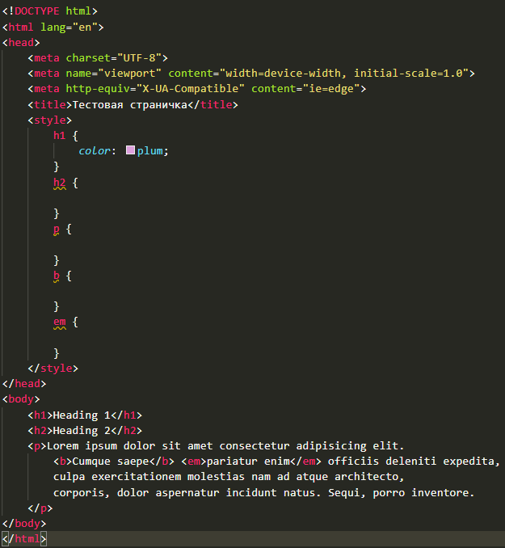

1
Страница со всеми известными стилями
легкоавтопроверка
Создай страницу и примени к ней все известные тебе стили: цвет текста и фона, размер шрифта, отступы и рамки. Пример — на картинке.

Показать ответ (сначала попробуй сам!)
<!DOCTYPE html>
<html lang="ru">
<head>
<meta charset="UTF-8">
<title>Моя страница</title>
<style>
body { background-color: #fff8e7; font-family: Arial, sans-serif; }
h1 { color: tomato; font-size: 48px; }
.card {
background-color: lightblue;
padding: 20px;
margin: 30px;
border: 3px dashed navy;
}
</style>
</head>
<body>
<h1>Мой первый стиль</h1>
<p class="card">Этот абзац в рамке и с отступами.</p>
</body>
</html>